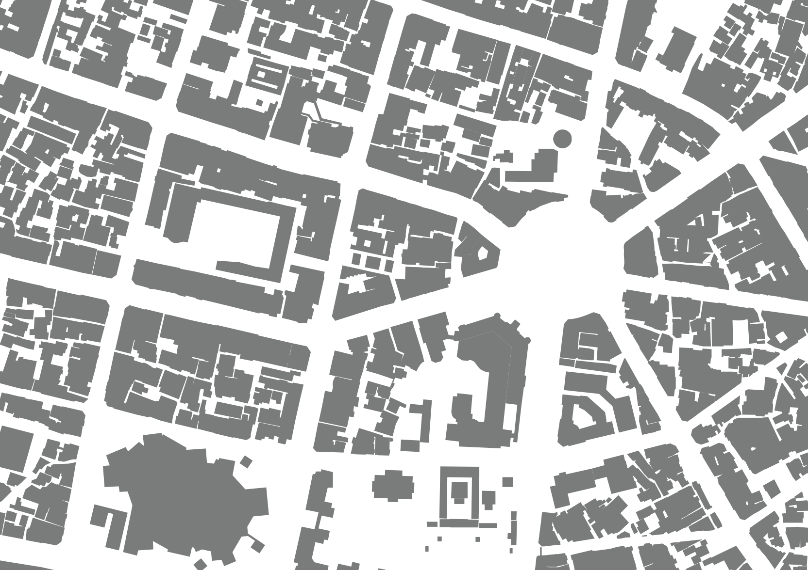

台中市
台中市在1900年即進行了都市計畫，規劃了棋盤式的道路網格。台中市的行政與商業中心主要位於前站地區，前站地區的網格約與柳川平行呈45度角， 後站地區則是與鐵路平行方向的網格狀發展，並有台中製糖所與台中酒廠等大型廠房。隨著台中市逐漸往外擴張而陸續規劃了重劃區，其中七期重劃區的 大量體建築與周圍呈現明顯不同的樣貌。
台南車站周遭
台南車站前道路呈放射狀，以西南向的中山路（大正町通）為主要軸線，由圓環與中山路（末廣町通）連接，並可通至路底的台南運河。 車站後方在最初未設立後站，且作為軍營使用，鐵道東西兩側的發展呈現明顯差異，現在則是國立成功大學的校園。

台南民生綠園附近
圓環作為多個道路的結點，在過去還具有權力展示的意涵。民生綠園周圍在以前設有台南州廳、台南警察署、台南合同廳舍；如今均已改為文化設施， 分別為台灣文學博物館、台南市美術館一館、台南市消防史料館。
恆春市
恆春城為清治時期所建，主要道路為西門與南門間的道路，聚落與行政機關皆分布在城的西側，東半部為練兵場，且東門外為墳墓區。 恆春城的東半部至今除一些機關設立，仍呈現較低度的發展。